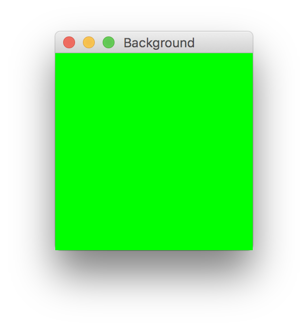
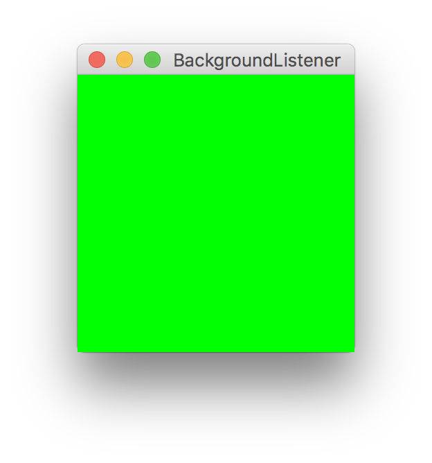
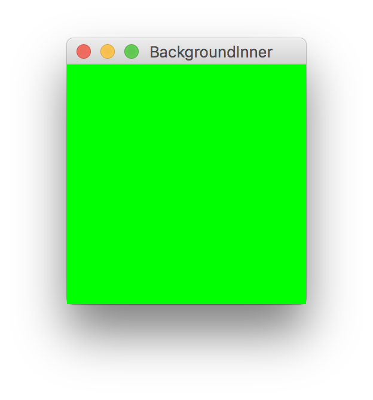
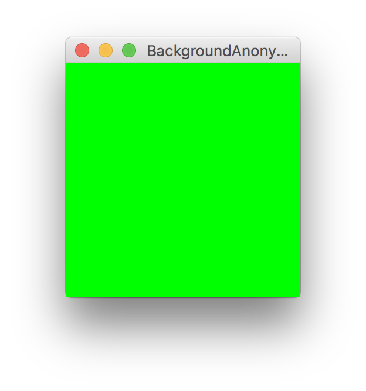
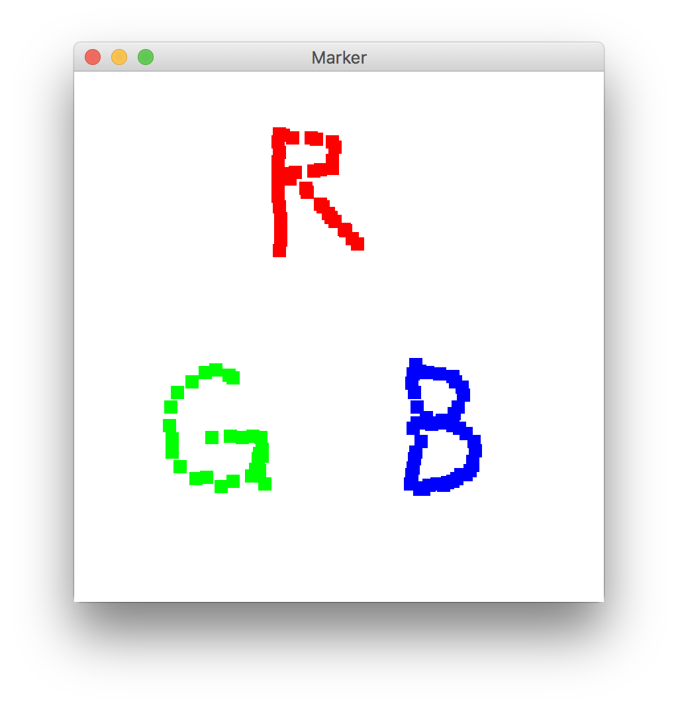
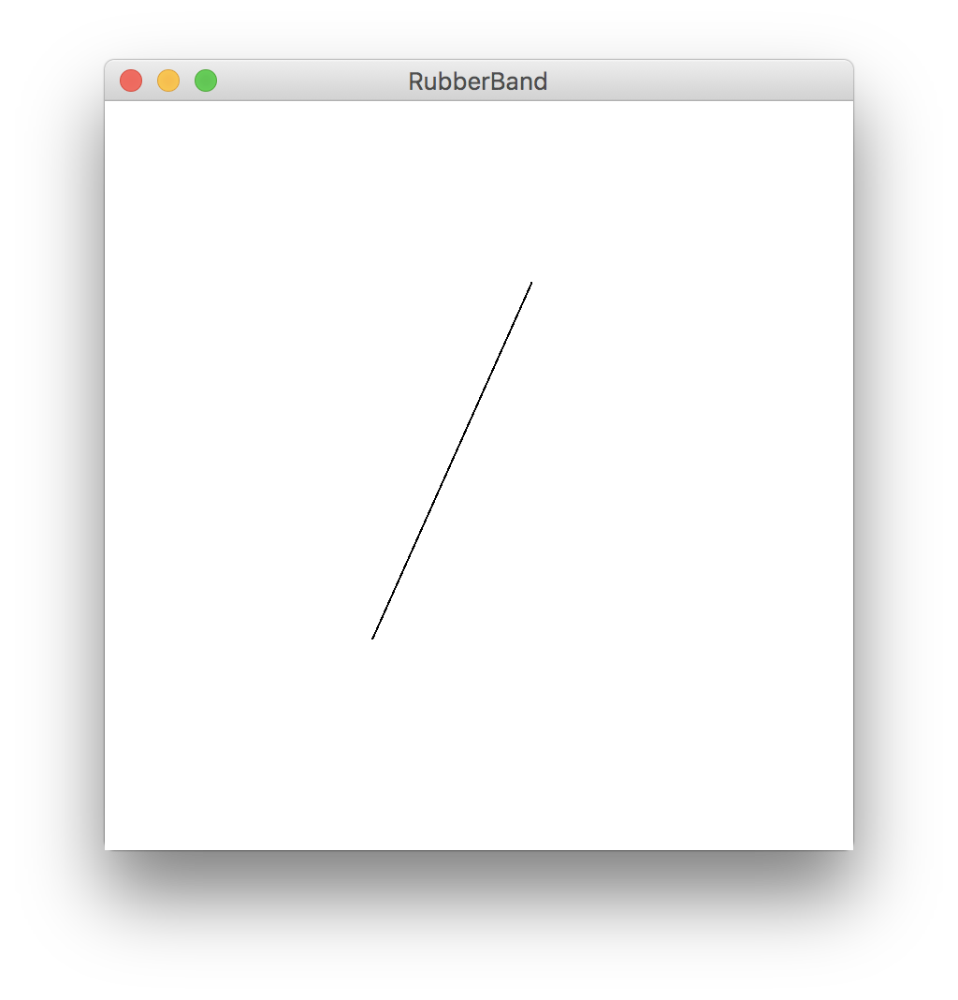
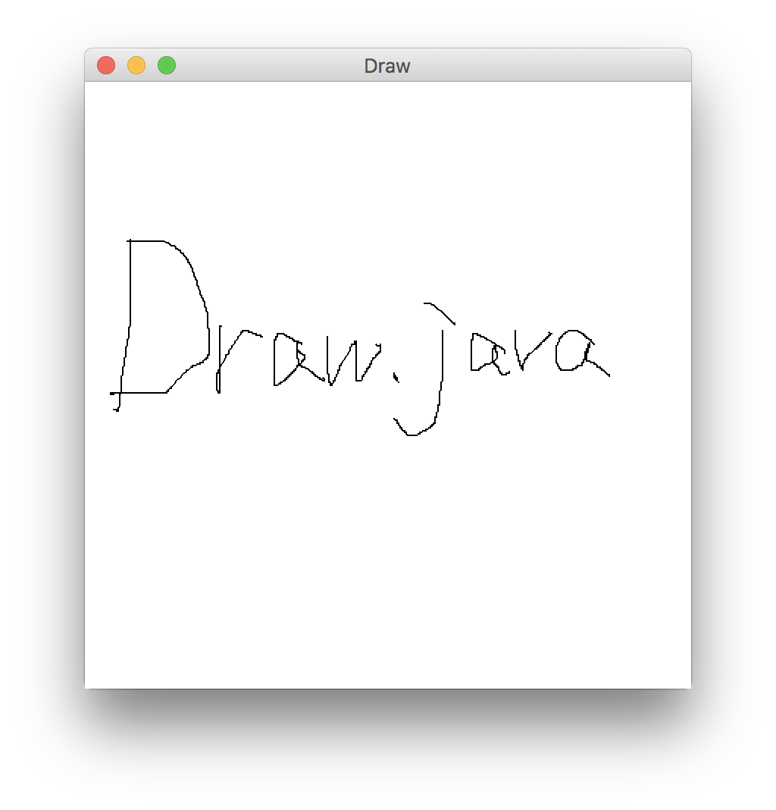
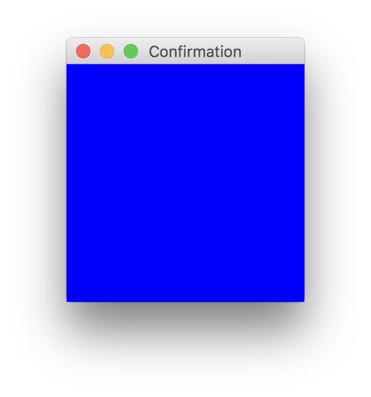
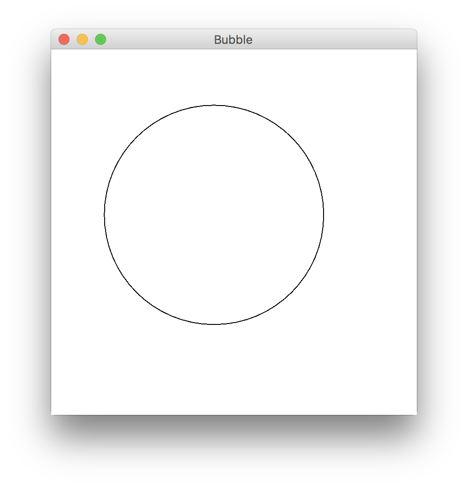

マウスイベントのプログラム (第 4 回)
| 氏名 | 越智 秀次
|
|---|
| クラス | 理 科 一 類 11 組
|
|---|
| 学生証番号 | J4-170235
|
|---|
□課題4.1 - 4.3節 例 1: マウスイベントによる背景色の変更ーBackground.java
○プログラムリスト
略
○実行コマンド
ochihidejinoMacBook-Pro:Chap04 ochihideji$ java Background
○実行結果

□課題4.2 - 4.3節 例 2: マウスイベントによる背景色の変更�(インターフェース版)ーBackgroundListener.java
○プログラムリスト
略
○実行コマンド
ochihidejinoMacBook-Pro:Chap04 ochihideji$ java BackgroundListener
○実行結果

□課題4.3 - 4.3節 例 3: マウスイベントによる背景色の変更�(内部クラス版)ーBackgroundInner.java
○プログラムリスト
略
○実行コマンド
ochihidejinoMacBook-Pro:Chap04 ochihideji$ java BackgroundInner
○実行結果

□課題4.4 - 4.3節 例 4: マウスイベントによる背景色の変更�(無名クラス版)ーBackgroundAnonymous.java
○プログラムリスト
略
○実行コマンド
ochihidejinoMacBook-Pro:Chap04 ochihideji$ java BackgroundAnonymous
○実行結果

○例1~例4の考察
これまでjavaファイルをコンパイルした時にできる*$1.classという名前のクラスファイルの意味がわからなかったが本例題に取り組むことで理解できた。例4ではMouseAdapterを拡張したものとWindowAdapterを拡張したものの２つの無名クラスがあるので、BackgroundAnonymous.javaをコンパイルすると*.class, *$1.class, *$2.classという３つのクラスファイルができる。
□課題4.5 - 4.3節 例 5: カーソル位置の獲得と描画ーMarker.java
○プログラムリスト
略
○実行コマンド
ochihidejinoMacBook-Pro:Chap04 ochihideji$ java Marker
○実行結果

○考察
Marker.javaは推奨されないAPIを使用またはオーバーライドしています。」という警告文が表示されることがあったが、拡張装飾子を用いると表示されなくなった。
□課題4.6 - 4.3節 例 6: マウスによる線分の描画ーRubberband.java
○プログラムリスト
略
○実行コマンド
ochihidejinoMacBook-Pro:Chap04 ochihideji$ java Rubberband
○実行結果

○考察
BUTTON2を押すと線分の色が赤色になるようにプログラムを変更したRubberband2も作成した。プログラムの変更点はMouseAdapterのメソッドにMarker.javaで使った拡張装飾子による記述を加えただけである。
□課題4.7 - 4.3節 例 ７: マウスを用いたお絵かきーDraw.java
○プログラムリスト
略
○実行コマンド
ochihidejinoMacBook-Pro:Chap04 ochihideji$ java Draw
○実行結果

○考察
お絵かきツールでは必須の、曲線の太さを変える機能も加えてみようと思ったがかなり難しく、断念した。
□課題4.8 - 章末課題: マウスイベントの確認ーConfirmation.java
○プログラムリスト
import java.awt.*;
import java.awt.event.*;
public class Confirmation extends Canvas implements MouseListener {
public static void main(String[] args) {
new Confirmation();
}
private static final int width = 200;
private static final int height = 200;
private Confirmation() {
super();
setSize(width, height);
setBackground(Color.white);
addMouseListener(this);
Frame f = new Frame("Confirmation");
f.add(this);
f.pack();
f.addWindowListener(new WindowAdapter() {
public void windowClosing(WindowEvent e) {
System.exit(0);
}
});
f.setVisible(true);
}
public void mousePressed(MouseEvent me) {
setBackground(Color.red);
repaint();
}
public void mouseReleased(MouseEvent me) {
setBackground(Color.green);
repaint();
}
public void mouseEntered(MouseEvent me) {
setBackground(Color.blue);
repaint();
}
public void mouseExited(MouseEvent me) {
setBackground(Color.white);
repaint();
}
public void mouseClicked(MouseEvent me) {
setBackground(Color.yellow);
repaint();
}
}
○実行コマンド
ochihidejinoMacBook-Pro:Chap04 ochihideji$ java Confirmation
○実行結果

○考察
javaのバージョン:java version "10" 2018-03-20
Java(TM) SE Runtime Environment 18.3 (build 10+46)
Java HotSpot(TM) 64-Bit Server VM 18.3 (build 10+46, mixed mode) /MacOSのバージョン：10.13.4 挙動については、マウスカーソルの進入で青、退出で白、マウスボタンのプレスで赤、リリースでは黄になる場合と緑になる場合があった。�(プレスからリリースまでの時間が比較的長いと緑になりやすかった。) クリックすると一瞬赤になったあと黄になった。
□課題4.9 - 章末問題: マウスによる円の描画ーBubble.java
○プログラムリスト
import java.awt.*;
import java.awt.event.*;
public class Bubble extends Canvas {
public static void main(String[] args) {
new Bubble();
}
private static final int width = 400;
private static final int height = 400;
private int centerX;
private int centerY;
private Bubble() {
super();
setSize(width, height);
setBackground(Color.white);
setForeground(Color.black);
addMouseListener(new MouseAdapter () {
public void mousePressed(MouseEvent me) {
centerX = me.getX();
centerY = me.getY();
}
});
addMouseMotionListener(new MouseMotionAdapter() {
public void mouseDragged(MouseEvent me) {
Graphics g = getGraphics();
update(g);
int x = me.getX();
int y = me.getY();
double R = Math.sqrt((double)(centerX - x)*(centerX - x)+(centerY - y)*(centerY - y));
g.drawOval(centerX - (int)R, centerY - (int)R, 2*(int)R, 2*(int)R);
}
});
Frame f = new Frame("Bubble");
f.add(this);
f.pack();
f.addWindowListener(new WindowAdapter() {
public void windowClosing(WindowEvent e) {
System.exit(0);
}
});
f.setVisible(true);
}
}
○実行コマンド
ochihidejinoMacBook-Pro:Chap04 ochihideji$ java Bubble
○実行結果

○考察
円の半径の定義の仕方が煩雑になってしまった。Rを初めからint型で定義することができればより簡単に記述できると思う。
□課題4.8 - 章末課題(参考): プログラムの読解
○改良後のプログラム
import java.awt.*;
import java.awt.event.*;
public class ClickSpeed extends Canvas implements MouseListener {
public static void main(String[] args) {
if (args.length == 0) {
System.err.println("Usage: java Clickspeed #1/2/3");
}
else{
new ClickSpeed("Clickspeed", Integer.parseInt(args[0]));
}
}
private static final int width = 400;
private static final int height = 400;
private int SIZE;
static final int TIMES = 10;
int count = 0;
static long fastest = -1;
long time;
int x, y;
boolean error = false;
private ClickSpeed(String name, int Ljevel) {
super();
if (Level == 3) {
SIZE = 5;
}
if (Level == 2) {
SIZE = 10;
}
if (Level == 1) {
SIZE = 20;
}
setSize(width, height);
setBackground(Color.white);
addMouseListener(this);
Frame f = new Frame("ClickSpeed");
f.add(this);
f.pack();
f.addWindowListener(new WindowAdapter() {
public void windowClosing(WindowEvent e) {
System.exit(0);
}
});
f.setVisible(true);
}
public void paint(Graphics g) {
if (count > 0) {
Dimension d = getSize();
x = (int) ((d.width - SIZE) * Math.random());
y = (int) ((d.height - SIZE) * Math.random());
if (error)
g.setColor(Color.RED);
else
g.setColor(Color.BLACK);
g.fillRect(x, y, SIZE, SIZE);
}
}
public void mousePressed(MouseEvent me) {
if (count > 0) {
if ((me.getModifiers() & MouseEvent.BUTTON1_MASK) != 0) {
int xc = me.getX();
int yc = me.getY();
if ((x < xc) && (xc < (x + SIZE)) && (y < yc)
&& (yc < (y + SIZE))) {
count--;
error = false;
}
else {
count++;
error = true;
}
if (count > 0) {
System.out.println("" + count + " more!!");
repaint();
}
else {
time += System.currentTimeMillis();
if ((fastest < 0) || (fastest > time))
fastest = time;
System.out.println("Finished in " + (time / 1000.0) + " secs. "
+ "Fastest time: " + (fastest / 1000.0) + " secs.");
}
}
}
else {
if (fastest < 0)
System.out.println("Click right button to start.");
else
System.out.println("Click right button to start. Fastest time: "
+ (fastest / 1000.0) + " secs.");
}
}
public void mouseReleased(MouseEvent me) {
if ((me.getModifiers() & InputEvent.BUTTON3_MASK) != 0) {
count = TIMES;
System.out.println("Start clicking ... " + TIMES + " more!!");
error = false;
time = -System.currentTimeMillis();
repaint();
}
}
public void mouseEntered(MouseEvent me) { }
public void mouseExited(MouseEvent me) { }
public void mouseClicked(MouseEvent me) { }
}
○元のプログラムの働き
任意の位置に現れる正方形を特定回数クリックするまでに要する時間を測るプログラムである。正方形(厳密には正方形の内部)を左クリックすれば成功で残りカウントが1だけ減少し、それ以外をクリックすれば失敗で正方形が赤くなり残りカウントが1だけ増加する。マウスの右クリックで開始し、残りカウントが0になると終了し、クリックし終えるまでにかかった時間と最速時間を表示する。
○改良した点
出現する正方形の大きさを三段階に変えることで、難易度設定をできるようにした。実行コマンドは、java ClickSpeed # (# = 1,2,3) 。＃の部分で難易度を指定する。1が最も易しく、正方形の一辺の長さは20で、2では一辺の長さは10、最も難しい3では一辺の長さが5となる。（ただ、3は難しすぎて私には終了させられなかった。）
□課題や授業に関して
○レポート作成に要した時間
4時間程度
○特に苦労した点
例題のプログラムをコンパイルしようとしたときに「~.javaは推奨されないAPIを使用またはオーバーライドしています」という警告文が表示される意味がわからなかった。拡張装飾子を用いると表示されなくなるが、これで本当に問題が解決しているのかわからない。
○授業についての感想や希望
席にモニターがないのは難点ですが、小さい教室になって授業が受けやすくなりました。